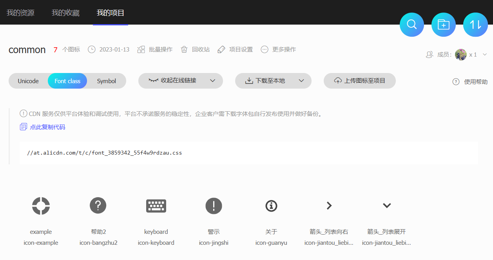

- .以字体图标|文字的形式呈现图像，多用于图标，可以取代精灵图的部分应用
- .在线使用、本地使用
- .可以按照Unicode、Class和Symbol三种方式使用图标
- .可以使用<i>或者<span>作为字体容器；甚至可以使用<div>
- .可以使用彩色图标
- .每次往项目中添加、删除字体图标时，都需要重新更新一下CSS资源
- .图标类名字区分大小写
- .更多使用细节，请参考帮助文档
- . 其它字体库fontawesome、
remixicon、 iconfinder
- 准备字体图标文件
- 1.注册|登陆：打开阿里字体
https://www.iconfont.cn，创建 Iconfont 账户
- 2.创建项目
- 3.查找图标：搜索并选择字体图标；添加到购物车[免费free]；如果需要使用图片，直接下载为图片格式
- 4.将购物车中的字体图标添加到项目中
- 5.更新并生成链接；可以下载到本地使用[推荐]；也可以在线使用
-

- 在线使用Font Class(推荐)
- 1.复制项目下面生成的在线fontclass链接到H5项目的<link>中；通常忽略网络协议https或http，由系统决定
-
<link rel="stylesheet" href="//at.alicdn.com/t/c/font_3859342_55f4w9rdzau.css">
- 2.在<i>使用基类iconfont和相应的字体图标类名
-
<i class="iconfont icon-xxx"></i>
- 本地使用Font Class(推荐)
- 1.在阿里字体图标项目处，选择：下载至本地，建议创建单独的文件夹保存
- 2.在H5项目<link>中引入其中的CSS文件。注意文件路径
-
./font_2357817_yw2cn9gbib/iconfont.css
- 3.在<i>使用基类iconfont和相应的字体图标类名
-
<i class="iconfont icon12"></i>
- 在线使用symbol
- .可以使用多色图标
- 1.拷贝项目下面生成的symbol代码：
-
//at.alicdn.com/t/font_8d5l8fzk5b87iudi.js
- 2.加入通用CSS代码（引入一次就行），并根据需要调整大小
-
<style type="text/css">
.icon {
width: 1em; height: 1em;
vertical-align: -0.15em;
fill: currentColor;
overflow: hidden;
}
</style>
- 3.挑选相应图标并获取类名，应用于页面
-
<svg class="icon" aria-hidden="true">
<use xlink:href="#icon-xxx"></use>
</svg>
- 在线使用 Unicode
- .可以动态使用图标
- 1.拷贝项目下面生成的font-face字体代码到CSS中
-
@font-face {
font-family: 'iconfont'; /* Project id 2357817 */
src: url('//at.alicdn.com/t/font_2357817_dhel13phics.woff2?t=1632974998048') format('woff2'),
url('//at.alicdn.com/t/font_2357817_dhel13phics.woff?t=1632974998048') format('woff'),
url('//at.alicdn.com/t/font_2357817_dhel13phics.ttf?t=1632974998048') format('truetype');
}
- 2.定义使用 iconfont的样式
-
.iconfont{
font-family:"iconfont" !important;
font-size:16px;
font-style:normal;
-webkit-font-smoothing: antialiased;
-webkit-text-stroke-width: 0.2px;
-moz-osx-font-smoothing: grayscale;
}
- 3.挑选相应图标并获取字体编码，应用于页面
-
<i class="iconfont">3</i>